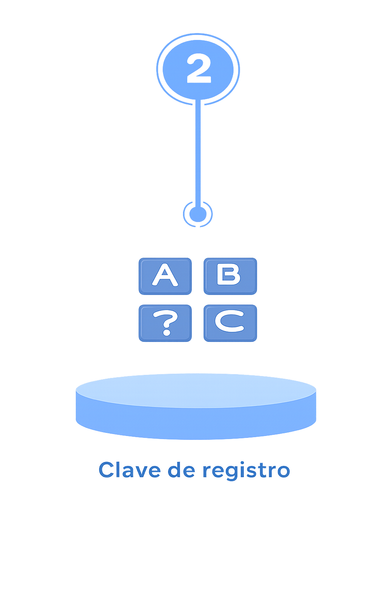
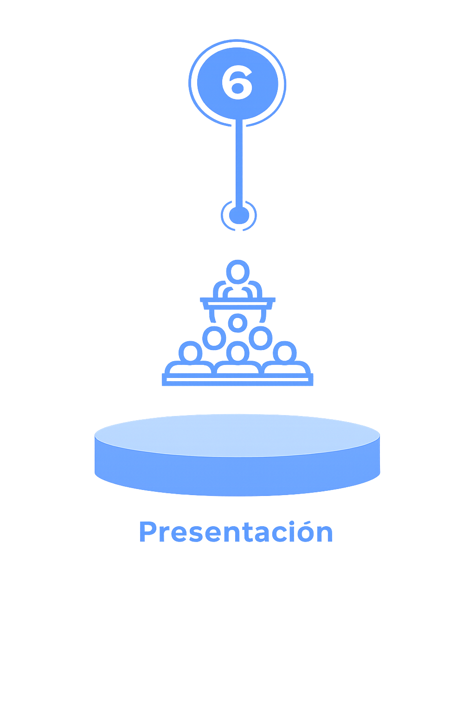

Revisa los pasos para enviar tu trabajo con opción de publicación.
1. Ingrese AQUÍ y llene el formulario con los datos solicitados. En este mismo formulario suba el resumen y el extenso del trabajo a someter. Para elaborar los documentos utilice las plantillas que se encuentra en el menú de "archivos" en la página del congreso.

2. Recibirá, al correo que registró en el formulario, la clave asignada al trabajo sometido. Guarde esta clave porque para toda comunicación posterior se hará referencia a ésta.
3. El Comité de Arbitraje le enviará el dictamen de evaluación del trabajo para presentarse en el congreso (resumen) y sobre el extenso (para publicarse en la revista AvaCient).
4. En el correo de respuesta del Comité de Arbitraje recibirá los datos para realizar el pago. Es importante esperar a recibir la aceptación del extenso para realizar el pago, ya que el monto depende de la modalidad de presentación.
5. Una vez efectuado el pago deberá registrarlo AQUÍ. En caso de requerir factura es necesario registrarlo el mismo día de haber realizado el depósito.

6. Presente el trabajo en la hora y fecha indicada en el programa final.